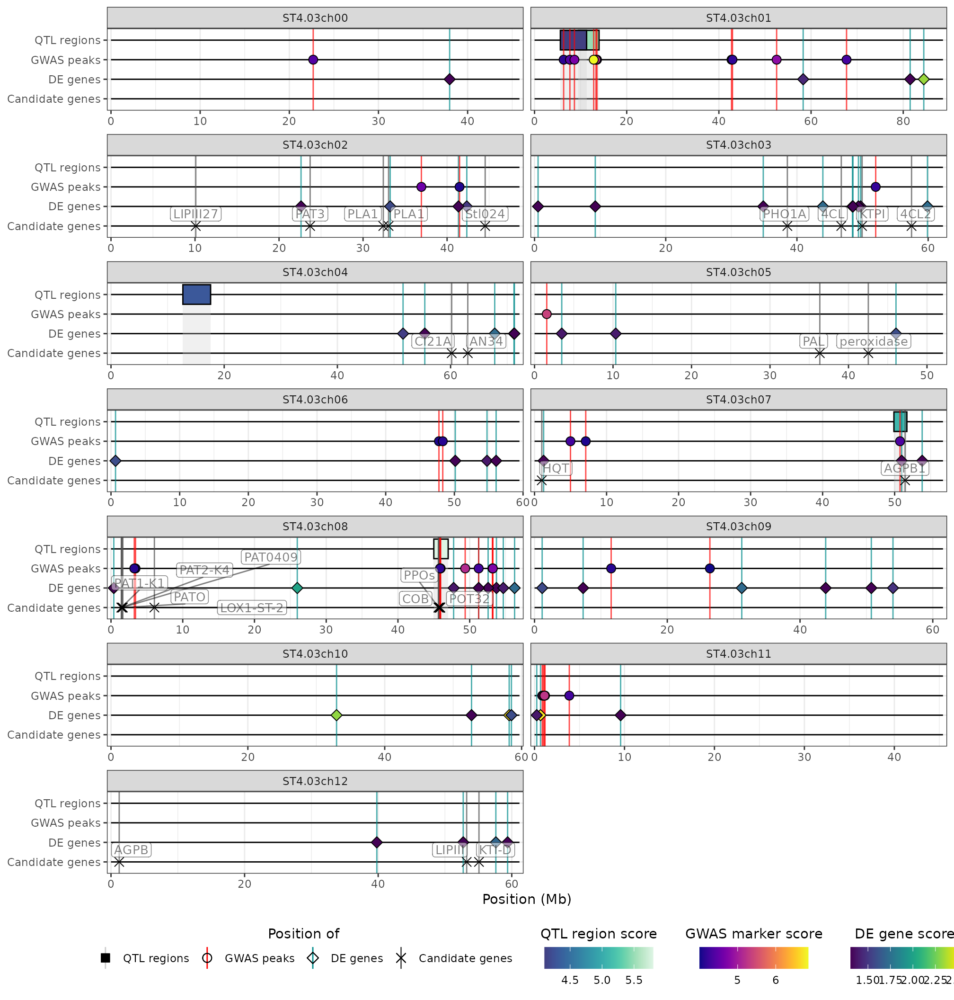
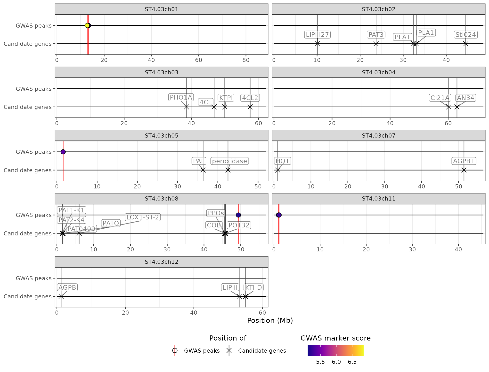
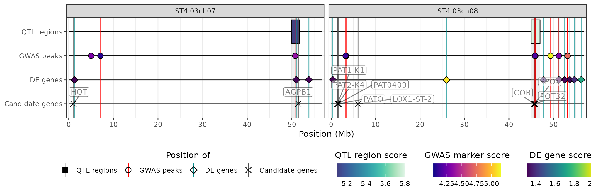
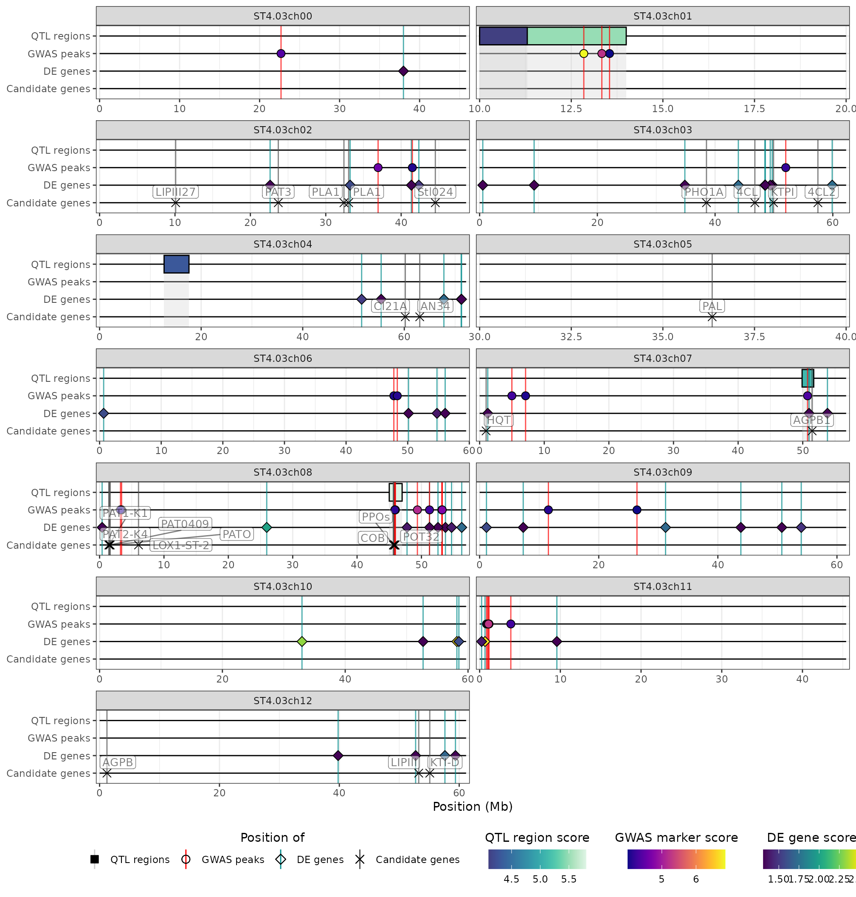
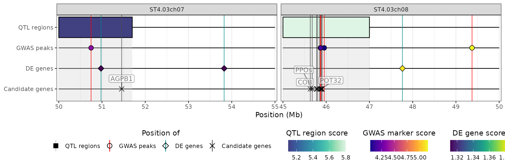
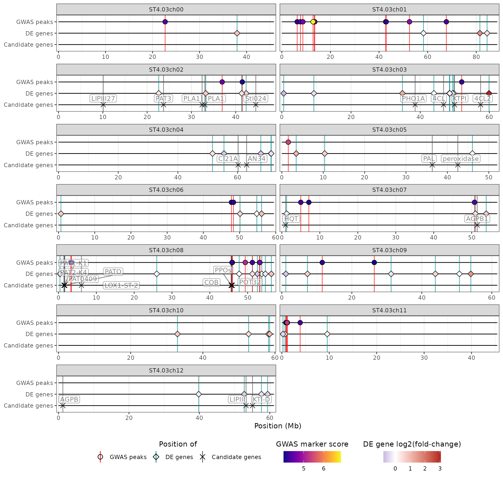
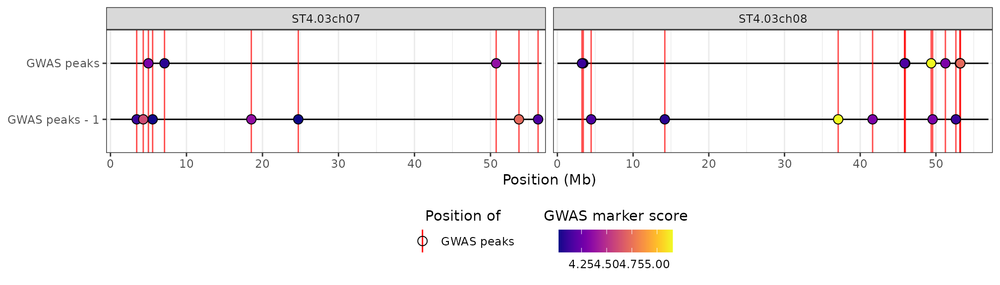
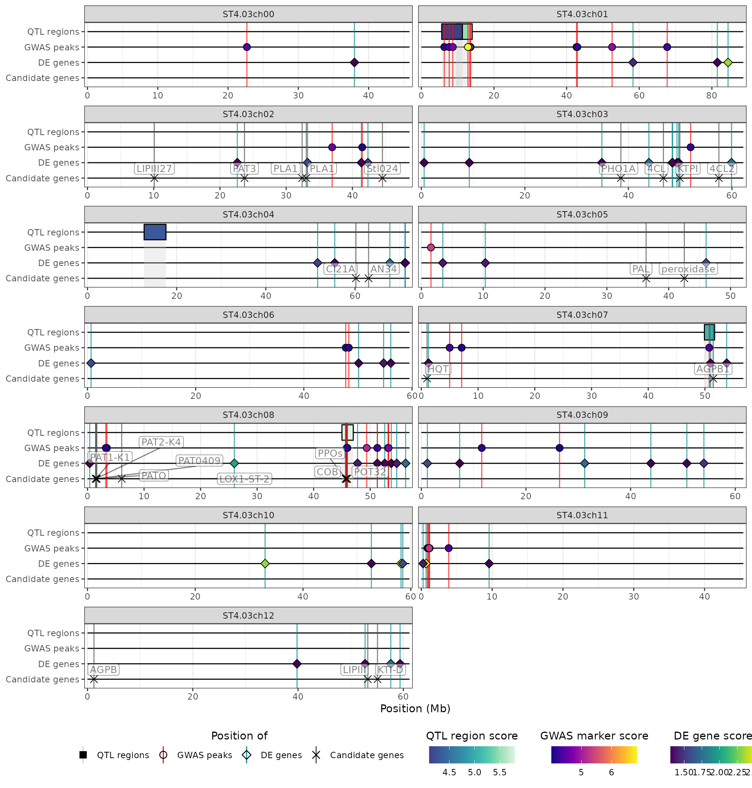
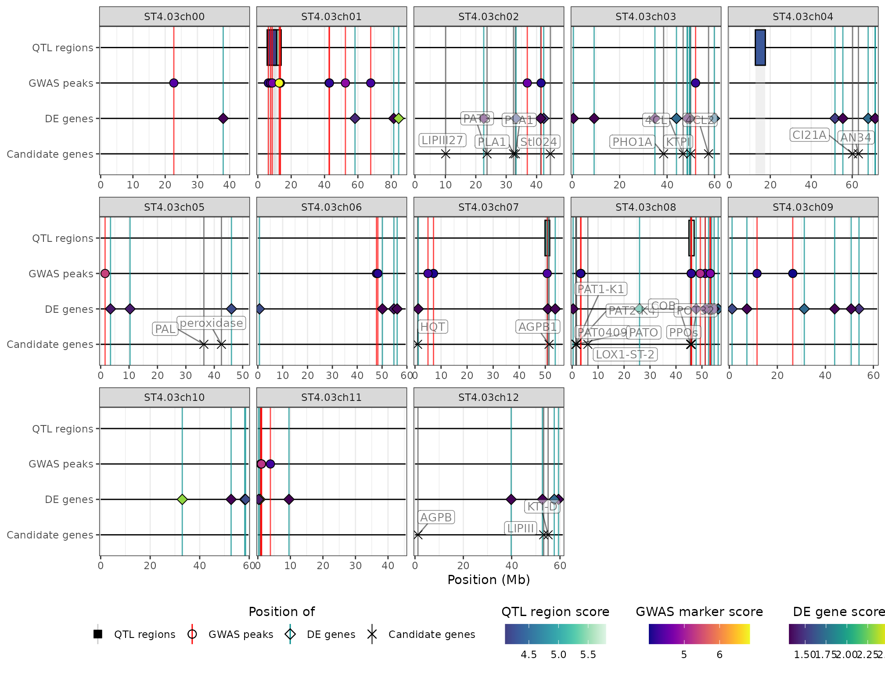

Input data
The hidecan package takes as input tibbles (data-frames)
of GWAS and DE results or candidate genes. The input data-frames should
contain some mandatory columns, depending on the type of data.
A list of example input datasets can be obtained via the
get_example_data() function:
x <- get_example_data()
str(x, max.level = 1)
#> List of 3
#> $ GWAS: tibble [72,847 × 4] (S3: tbl_df/tbl/data.frame)
#> $ DE : tibble [25,163 × 7] (S3: tbl_df/tbl/data.frame)
#> $ CAN : tibble [32 × 6] (S3: tbl_df/tbl/data.frame)GWAS results
GWAS results should be provided as a tibble or data-frame, with one row per genetic marker. The data-frame should contain at least the following columns:
chromosome: character column, giving the ID of the chromosome on which each marker is located;position: numeric column, the physical position along the chromosome (in base pairs - bp) of the marker;either
scoreorpadj: numeric column, providing either the score (i.e.-log10(p-value)) or the adjusted p-value of the marker. If ascorecolumn is provided, thepadjcolumn will be ignored. If only apadjcolumn is provided, ascorecolumn will be constructed as-log10(padj).
Any other column present in the data-frame will be ignored. An example of valid input is shown below:
head(x[["GWAS"]])
#> # A tibble: 6 × 4
#> id chromosome position score
#> <chr> <chr> <dbl> <dbl>
#> 1 ST4.03ch00_172333 ST4.03ch00 172333 0.342
#> 2 ST4.03ch00_172690 ST4.03ch00 172690 0.179
#> 3 ST4.03ch00_194668 ST4.03ch00 194668 0.0479
#> 4 ST4.03ch00_194695 ST4.03ch00 194695 0.469
#> 5 ST4.03ch00_194712 ST4.03ch00 194712 0.893
#> 6 ST4.03ch00_275624 ST4.03ch00 275624 0.380Differential expression results
DE results should be provided as a tibble or data-frame, with one row per gene. The data-frame should contain at least the following columns:
chromosome: character column, giving the ID of the chromosome on which each gene is located;startandend: numeric columns, giving the starting and end position of the gene along the chromosome (in bp). These two columns will be used to calculate the position of the gene as the half-way point between the start and end of the gene.either
scoreorpadj: numeric column, providing either the score (i.e.-log10(p-value)) or the adjusted p-value of the gene. If ascorecolumn is provided, thepadjcolumn will be ignored. If only apadjcolumn is provided, ascorecolumn will be constructed as-log10(padj).either
foldChangeorlog2FoldChange: numeric column, giving either the fold-change or log2(fold-change) of the gene. If alog2FoldChangecolumn is provided, thefoldChangecolumn will be ignored. If only afoldChangecolumn is provided, alog2FoldChangewill be constructed aslog2(foldChange).
Any other column present in the data-frame will be ignored. An example of valid input is shown below:
head(x[["DE"]])
#> # A tibble: 6 × 7
#> gene chromosome padj log2FoldChange start end label
#> <chr> <chr> <dbl> <dbl> <dbl> <dbl> <chr>
#> 1 PGSC0003DMG400013995 ST4.03ch00 0.972 0.000728 174833 179264 Serine …
#> 2 PGSC0003DMG400045238 ST4.03ch00 0.922 -0.000878 461366 461756 N-acyle…
#> 3 PGSC0003DMG400045392 ST4.03ch00 NA 0.00287 690521 692816 Gene of…
#> 4 PGSC0003DMG400022052 ST4.03ch00 0.609 0.0293 804763 805569 Conserv…
#> 5 PGSC0003DMG400022093 ST4.03ch00 0.176 0.147 1247383 1252635 Conserv…
#> 6 PGSC0003DMG402018893 ST4.03ch00 0.950 0.00125 1510542 1513352 Stricto…(Note that in the example dataset, some genes have missing values in
the padj column; this corresponds to genes that have been
filtered out via independent
filtering in the DEseq2 package).
Candidate genes
A list of candidate genes (e.g. genes previously found associated with a trait of interest based on literature search) can be provided as a tibble or data-frame, with one row per gene. This data-frame can also contain variants of interest (see below). The data-frame should contain at least the following columns:
chromosome: character column, giving the ID of the chromosome on which each gene is located;startandend: numeric columns, giving the starting and end position of the gene along the chromosome (in bp). These two columns will be used to calculate the position of the gene as the half-way point between the start and end of the gene. For genomic variants or markers, simply set both thestartandendcolumns to the physical position of the marker.name: character column, giving the name of the candidate gene that will be displayed in the HIDECAN plot. Set toNAfor any subset of genes to remove their label in the plot (can help if many genes are very close, to avoid cluttering the plot).
Any other column present in the data-frame will be ignored. An example of valid input is shown below:
head(x[["CAN"]])
#> # A tibble: 6 × 6
#> id chromosome start end name gene_name
#> <chr> <chr> <dbl> <dbl> <chr> <chr>
#> 1 PGSC0003DMG400003155 ST4.03ch03 46757152 46762127 4CL 4-coumarate-CoA …
#> 2 PGSC0003DMG400014223 ST4.03ch03 57466692 57469946 4CL2 4-coumarate-CoA …
#> 3 PGSC0003DMG400011189 ST4.03ch07 1001854 1006278 HQT HQT
#> 4 PGSC0003DMG400005492 ST4.03ch05 36342746 36347409 PAL phenylalanine am…
#> 5 PGSC0003DMG400005279 ST4.03ch05 42523943 42525912 peroxidase peroxidase
#> 6 PGSC0003DMG400007782 ST4.03ch03 38537202 38540209 PHO1A PHO1ACreating a HIDECAN plot
The hidecan_plot() function creates a HIDECAN plot. It
takes as input the data-frames presented above, as well as the score and
log2(fold-change) thresholds used to select the significant markers and
genes.
In this example, we only show markers with a score above 4, which corresponds to a p-value below \(1\times10^{-4}\), and genes with a score above 1.3, which corresponds to a p-value of 0.05. We don’t place any threshold on the log2(fold-change) of the genes:
hidecan_plot(
gwas_list = x[["GWAS"]], ## data-frame of GWAS results
de_list = x[["DE"]], ## data-frame of DE results
can_list = x[["CAN"]], ## data-frame of candidate genes
score_thr_gwas = -log10(0.0001), ## sign. threshold for GWAS
score_thr_de = -log10(0.05), ## sign. threshold for DE
log2fc_thr = 0 ## log2FC threshold for DE
)
Note that it is possible to provide only a subset of the possible input data, e.g. only GWAS results and a list of candidate genes:
hidecan_plot(
gwas_list = x[["GWAS"]],
can_list = x[["CAN"]],
score_thr_gwas = 4
)
Removing empty chromosomes
By default, the HIDECAN plot shows all chromosomes present in the
input data. However, it is possible that some of the chromosomes appear
empty, as they do not contain any significant gene or marker, nor any
candidate gene. In this case, it is possible to exclude such “empty”
chromosomes from the HIDECAN plot, through the
remove_empty_chrom argument.
We will demonstrate that by increasing the score threshold applied to the GWAS results, in order to get fewer significant markers. In this case, chromosomes 0, 6, 9 and 10 do not contain any significant marker of gene of interest:
## Chromosomes 0, 6, 9 and 10 are empty
hidecan_plot(
gwas_list = x[["GWAS"]],
can_list = x[["CAN"]],
score_thr_gwas = 5
)By setting the remove_empty_chrom argument to
TRUE, these chromosomes will be removed from the plot:
hidecan_plot(
gwas_list = x[["GWAS"]],
can_list = x[["CAN"]],
score_thr_gwas = 5,
remove_empty_chrom = TRUE
)
Selecting chromosomes and genomic positions
It is possible to specify which chromosomes should be represented in
the HIDECAN plot, via the chroms argument. For example,
with the following command we restrict the plot to chromosomes 7 and
8:
hidecan_plot(
gwas_list = x[["GWAS"]],
de_list = x[["DE"]],
can_list = x[["CAN"]],
score_thr_gwas = -log10(0.0001),
score_thr_de = -log10(0.05),
log2fc_thr = 0,
chroms = c("ST4.03ch07", "ST4.03ch08")
)
We can also “zoom in” on some or all chromosomes, through the
chrom_limits argument. To zoom in on all chromosomes at
once, we pass to the chrom_limits argument an integer
vector of length 2, which gives the lower and upper limits in bp to use.
For example here, we focus on the 10-20Mb region of each chromosome:
hidecan_plot(
gwas_list = x[["GWAS"]],
de_list = x[["DE"]],
can_list = x[["CAN"]],
score_thr_gwas = -log10(0.0001),
score_thr_de = -log10(0.05),
log2fc_thr = 0,
chrom_limits = c(10e6, 20e6)
)
Alternatively, we can apply different limits to some of the chromosomes, by passing a named list to the argument. The names of the list should match the chromosomes name, and each element should be an integer vector of length 2 giving the lower and upper limits in bp to use for the corresponding chromosome. For example, we will focus on the 10-20Mb region for chromosome 1, and the 30-40Mb region for chromosome 5, and leave all other chromosomes as is:
hidecan_plot(
gwas_list = x[["GWAS"]],
de_list = x[["DE"]],
can_list = x[["CAN"]],
score_thr_gwas = -log10(0.0001),
score_thr_de = -log10(0.05),
log2fc_thr = 0,
chrom_limits = list("ST4.03ch01" = c(10e6, 20e6),
"ST4.03ch05" = c(30e6, 40e6))
)
The two options chroms and chrom_limits can
be used together:
hidecan_plot(
gwas_list = x[["GWAS"]],
de_list = x[["DE"]],
can_list = x[["CAN"]],
score_thr_gwas = -log10(0.0001),
score_thr_de = -log10(0.05),
log2fc_thr = 0,
chroms = c("ST4.03ch07", "ST4.03ch08"),
chrom_limits = list("ST4.03ch07" = c(50e6, 55e6),
"ST4.03ch08" = c(45e6, 50e6))
)
Colour genes by log2(fold-change)
By default, in a HIDECAN plot, the points representing both
significant markers and DE genes are coloured according to their GWAS/DE
score. However, it is possible to colour the DE genes by their
log2(fold-change) value instead, by setting the
colour_genes_by_score argument to FALSE:
hidecan_plot(
gwas_list = x[["GWAS"]],
de_list = x[["DE"]],
can_list = x[["CAN"]],
score_thr_gwas = -log10(0.0001),
score_thr_de = -log10(0.05),
log2fc_thr = 0,
colour_genes_by_score = FALSE
)
Genes with a negative log2(fold-change) will be represented with a shade of blue, and genes with a positive log2(fold-change) will be represented with a shade of red.
More than one GWAS, DE or candidate gene list
The hidecan_plot() function can take as an input lists
of data-frames for GWAS results, DE results or candidate genes. This
way, it is possible to visualise more than one GWAS or DE analyses at
once, for example if investigating several traits at once or comparing
more than two treatment groups.
For this example, we’ll focus on chromosomes 7 and 8 (only for clarity of the plot):
library(dplyr)
library(purrr)
library(stringr)
## Retaining only markers and genes on chromosomes 7 and 8
x_small <- x |>
map(~ filter(.x, str_detect(chromosome, "(07|08)")))We’ll create a second data-frame of GWAS results by shuffling the marker scores in the example dataset:
## Creating a second GWAS result tibble by shuffling
## the marker scores from the original data
gwas_1 <- x_small[["GWAS"]]
gwas_2 <- gwas_1 |>
mutate(score = sample(score))We can pass both GWAS results data-frames to the
hidecan_plot() function as a list:
hidecan_plot(
gwas_list = list(gwas_1, gwas_2),
score_thr_gwas = -log10(0.0001),
score_thr_de = -log10(0.05),
log2fc_thr = 0
)
By default, the two GWAS tracks will be given unique y-axis labels, as can be seen above. It is possible to customise this by naming the elements in the input list:
hidecan_plot(
gwas_list = list("Trait 1" = gwas_1,
"Trait 2" = gwas_2),
score_thr_gwas = -log10(0.0001),
score_thr_de = -log10(0.05),
log2fc_thr = 0
)
Defining chromosomes length
By default, the hidecan_plot() function calculates the
length of the different chromosomes based on the input data, by looking
at the maximum position of genes and markers on each chromosome.
However, it is also possible to pass on a tibble of chromosome length
(in bp) through the chrom_length argument.
library(tibble)
## Chromosomes length as recorded in Ensembl Plants
potato_chrom_length <- c(
ST4.03ch00 = 45813526,
ST4.03ch01 = 88663952,
ST4.03ch02 = 48614681,
ST4.03ch03 = 62190286,
ST4.03ch04 = 72208621,
ST4.03ch05 = 52070158,
ST4.03ch06 = 59532096,
ST4.03ch07 = 56760843,
ST4.03ch08 = 56938457,
ST4.03ch09 = 61540751,
ST4.03ch10 = 59756223,
ST4.03ch11 = 45475667,
ST4.03ch12 = 61165649
) |>
## turn a named vector into a tibble
enframe(name = "chromosome",
value = "length")
head(potato_chrom_length)
#> # A tibble: 6 × 2
#> chromosome length
#> <chr> <dbl>
#> 1 ST4.03ch00 45813526
#> 2 ST4.03ch01 88663952
#> 3 ST4.03ch02 48614681
#> 4 ST4.03ch03 62190286
#> 5 ST4.03ch04 72208621
#> 6 ST4.03ch05 52070158
hidecan_plot(
gwas_list = x[["GWAS"]],
de_list = x[["DE"]],
can_list = x[["CAN"]],
score_thr_gwas = -log10(0.0001),
score_thr_de = -log10(0.05),
log2fc_thr = 0,
chrom_length = potato_chrom_length
)
Note that in this case we can’t really see the difference with the computed chromosome length values.
Controlling the plot properties
The hidecan_plot() function offers several arguments to
control different aspects of the HIDECAN plot. For example, it is
possible to specify the number of rows or columns the plot should have,
through the n_rows and n_cols arguments. Note
that only one of these arguments will be considered (n_rows
takes precedence):
## Specifying the number of rows
hidecan_plot(
gwas_list = x[["GWAS"]],
de_list = x[["DE"]],
can_list = x[["CAN"]],
score_thr_gwas = -log10(0.0001),
score_thr_de = -log10(0.05),
log2fc_thr = 0,
n_rows = 3
)
## Specifying the number of columns
hidecan_plot(
gwas_list = x[["GWAS"]],
de_list = x[["DE"]],
can_list = x[["CAN"]],
score_thr_gwas = -log10(0.0001),
score_thr_de = -log10(0.005),
log2fc_thr = 0,
n_cols = 3
)
In addition, it is possible to:
add a title and subtitle to the plot (
titleandsubtitlearguments);control the position of the legend (
legend_positionargument);control the size of the points (
point_sizeargument);control the size of the labels and padding around the text for the candidate genes labels (
label_sizeandlabel_paddingarguments).
Viewport error
If you are working on RStudio, you may encounter the following error:
#> Error in grid.Call(C_convert, x, as.integer(whatfrom), as.integer(whatto), : Viewport has zero dimension(s)This is caused by the plotting window being too small. Try increasing
the size of the plotting window in the RStudio console. Alternatively,
you can save the plot into an R object, then use
ggplot2::ggsave() to save it into a file:
p <- hidecan_plot(
gwas_list = x[["GWAS"]],
de_list = x[["DE"]],
can_list = x[["CAN"]],
score_thr_gwas = -log10(0.0001),
score_thr_de = -log10(0.05),
log2fc_thr = 0,
label_size = 2
)
ggplot2::ggsave("hidecan_plot.pdf", p, width = 10, height = 10)